立体几何
【空间图形】
由空间的点、线、面所构成的图形，也可以看成是空间点的集合.例如，长方体、圆柱、圆锥等都是空间图形.平面图形是空间图形的一部分.由于几何学对几何图形反映什么样的实际物体是不指明的，所以几何图形是从实际物体经过归纳、概括和抽象的产物.如果只研究一个物体的形状和大小，而不考虑它的其他性质，我们就把这个物体叫做几何体，简称体.体有长、宽和高.正是由于空间图形的抽象性，一个图形可以是许多实际物体的抽象形式，因而使几何学在实践中有广泛的应用.
【公理法】
整理与叙述数学知识的一种常用方法.这种数学公理化形式的确立，是古希腊数学的最伟大的成就之一.欧几里得«原本» 的内容固然重要，但那些内容借以表现的形式甚至更为重要.«原本» 中公理法的表现形式对后代产生了如此深刻的影响，以致这部著作成了严格的数学证明的典范，成为现代数学表述形式的原型.
什么叫做公理呢? 在形式逻辑三段论的推理过程，“结论” 的得出是以“大前提” 为依据的.而“大前提”也是个命题，因此作为推证某一命题依据的“大前提”，也必须是得到证明的正确的命题.否则这个命题的推证是无效的，当然循环论证(两个命题互为推理的依据) 也是无效的.这样一来，顺次地上溯，终必出现其真实性不能通过推理论证的命题.我们把不能以别的命题为“大前提” 来推理证明，而且又用来作为推证其它命题的命题，叫做公理.公理的正确性，是由人类长期的实践活动所证实的.
一个学科的陈述，如果采取最初规定若干条该学科的公理，而其它的内容都可以由这些公理逻辑地推出，那么我们就说这个学科采用了公理法的形式进行表述.例如，平面几何和立体几何，都采用公理法进行陈述.立体几何中的公理体系包括以下六条公理，在此基础上建立起立体几何这门学科的全部理论.
公理1: 如果一条直线上的两点在一个平面内，那么这条直线上所有的点都在这个平面内.
公理2: 如果两个平面有一个公共点，那么它们有且只有一条通过这个点的公共直线.
公理3: 经过不在同一条直线上的三点，有且只有一个平面.
公理4: 平行于同一条直线的两条直线互相平行.
公理5: 长方体的体积等于它的长、宽、高的积.
公理6: 夹在两个平行平面间的两个几何体，被平行于这两个平面的任意平面所截，如果截得的两个截面的面积总相等，那么这两个几何体的体积相等.
【反证法】
数学证明中，有的命题往往不易或不能直接从原命题的题设证得结论，而改证它的逆否命题(因为它与原命题等效).即先假设原命题结论不真，然后由此假定出发，经过逐步推演，导出同已知命题或题设条件相矛盾的结果.产生这种矛盾的原因，不是由于推理有误所致.根据逻辑学中的不矛盾律(在同一思维过程中，两个互相反对或互相矛盾的判断不能同时都真，其中至少有一个是假的.公式是“A 不是非A”)、排中律(在同一思维过程中，两个互相矛盾的判断不能同时都假，其中必有一个是真的.公式是“A 或者非A”)，便有开始假设的原命题结论不真是错误的，因此原命题的结论是正确的.这种证明的方法叫反证法.
根据反证法的基本思路，我们把用反证法证明命题的一般步骤归结为: 否定结论、推导可能、出现矛盾、证明完成.由于否定结论的情况不同，反证法又可分为归谬法和穷举法，当对原命题结论否定情形只有一种时用归谬法，当对原命题结论否定情况不只一种(但是有限种)时用穷举法.推导可能是反证法中带关键性的步骤，不论归谬法还是穷举法，最后都要“归谬” 出现矛盾.矛盾是怎样出现的呢? 当然要具体情况具体分析.一般常用下面几种情况，即和已知定义矛盾、和已知公理矛盾、和已知定理矛盾、和题设矛盾、和开始所作的假设矛盾、或者推出的不同结果自相矛盾等等.
立体几何中，反证法用得比较多.除了掌握反证法的基本思路和步骤外，还要防止在推导可能的时候犯循环论证的错误，使全部论证前功尽弃.
例 试证: 一条直线与一个平面内的两条相交直线垂直，则该直线与这个平面垂直(即两垂线定理).
已知: 直线l⊥a，l⊥b，直线a、b 平面α，且a∩b＝A.求证: l⊥平面α.
证明假设l 不垂直平面α，l′为l 在α 平面内的射线，则有l′⊥a，l′⊥b (三垂线定理的逆定理).于是，在平面α 内，过A 点有两条直线a、b 与已知直线l′垂直，这与定理“在平面内过一点只有一条直线与已知直线垂直”相矛盾.故假设是不正确的，所以l⊥平面α.
说明: 这里反证法的步骤，应该说用的是很漂亮的.主要问题是在推导可能的时候，用了三垂线定理的逆定理，而三垂线定理及其逆定理的证明用了两垂线定理，因此犯了循环论证的错误.初学者，这种的错误是屡见不鲜的，我们应该有所警惕.
【平面】
几何元素之一，是从客观现象中抽象出来的一个原始概念(原名).例如，平静的水面、窗玻璃面、桌面等都给我们以平面的形象.几何里的平面是无限延展的.在立体几何中，通常画平行四边形来表示平面.当平面是水平放置的时候，通常把平行四边形的锐角画成45°，横边画成等于邻边的两倍.
说明: 不能引用别的名称(概念) 来定义，并且又用来定义其它名称(概念) 的名称(概念)，就叫做基本概念，或简称为原名.数学中，数、量、点、直线、平面、集合等等，都是原名.在中学数学课本中，原名虽然也有解释，但并不是定义，只是对原名所反映的对象的一些描绘而已.
【平面的基本性质】
有关平面的三个公理及三个推论，是研究空间图形性质的理论基础.
公理1: 如果一条直线上的两点在一个平面内，那么这条直线上所有的点都在这个平面内.
公理2: 如果两个平面有一个公共点，那么它们有且只有一条通过这个点的公共直线.
公理3: 经过不在同一条直线上的三点，有且只有一个平面.
这三个公理，刻画出平面区别于其它图形的本质特征，即具有这三个性质的图形才成其为平面.可能通过正、反例子，如“一张纸对折折痕总是直线”、“球面和地面有一个公共点时并没有过这个点的公共直线” 等，加深对这三个公理的理解.
推论1: 经过一条直线和这条直线外的一点，有且只有一个平面.
推论2: 经过两条相交直线，有且只有一个平面.
推论3: 经过两条平行直线，有且只有一个平面.
平面的基本性质小结
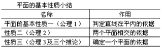
一部数学从理论上说，是由原名、公理、定义、定理(命题) 及其推论所组成的.
【空间多边形】
不在同一个平面内的若干线段(至少有四条)，首尾相接，并且最后一条的尾端和最初一条的首端重合，这样组成的图形叫做“空间多边形”.例如，空间四边形就是最简单的空间多边形.
例 试证内接于空间四边形的任何平面四边形的对边如果相交，那么交点必定在空间四边形的对角线上.
已知: 如图4 －1，空间四边形ABCD，又平面四边形PQRS 的顶点P、Q、R、S 分别在线段AB、AD、CD、CB上，且PQ∩SR ＝K.
求证: K∈BD.
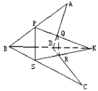
图4-1
证明∵P∈AB，Q∈AD，K∈PQ.
∴PQ 平面ABD，∴K∈平面ABD.
同理K∈平面BCD，∴K∈BD.
说明: 怎样证明点在直线上? 本题告诉我们，如果要证明点在两个平面的交线上，那么只需要证明这个点既在第一个平面上又在第二个平面上即可.
【两条直线的位置关系】
空间两条不重合的直线有三种位置关系，即相交、平行、异面.
相交直线: 在同一个平面内，有且只有一个公共点.
平行直线: 在同一个平面内，没有公共点.
异面直线: 不同在任何一个平面内，没有公共点.
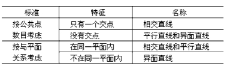
空间两条不重合的直线位置关系列表比较如下
【异面直线】
不同在任何一个平面内的两条直线叫做异面直线.异面直线的概念，在教学中既是重点又是难点，它的本质特征是既不相交又不平行的两条直线.
例 平面内一点与平面外一点的连线，和平面内不经过该点的直线是异面直线.(异面直线判定定理)
已知: 直线a 平面α，点A∉α，点B∈平面α，B∉a.
求证: 直线AB 与a 是异面直线.
证明 假设直线AB 与a 共面β，则平面β∩α ＝a.
∵点B∈α∩β，∴点B∈a 这与已知B∉a 矛盾.
∴假设是不正确的，∴AB 与a 是异面直线.
说明: 以下证法是错误的，产生错误的原因是异面直线的概念不清.“∵a⊂α，B∈α，A∉α，∴AB 和a 不同在平面α 内，∴AB 与a 异面.” 对类似的错误，应该有所警惕.怎样证明两条直线异面呢? 现在我们已知可以用三个方法，即利用异面直线的定义、利用异面直线的判定定理、利用反证法.
【异面直线所成的角】
直线a、b 是异面直线，经过空间任意一点O，分别引直线a′∥a，b′∥b.我们把直线a′和b′所成的锐角(或直角) 叫做异面直线a 和b 所成的角.
异面直线所成的角，定量地刻画着两条异面直线的位置关系.要注意异面直线所成角的大小与点O 的位置无关，为简便起见一般取在直线a (或b) 上.异面直线所成的角的取值范围是正锐角或直角，这一点在实际运用概念时，常常因疏忽了它而出错.
例 长方体长和宽都是4cm，高是2cm (如图4 －2).求AA′和BC′、AC 和BC′所成的角
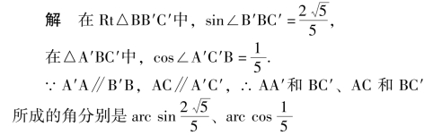
说明: 求异面直线所成的角，常常是利用平移的方法，得到一个三角形，然后根据锐角三角函数的定义或余弦定理求解.如果本题还要求A′C′和BD′所成的角呢? 这时平移稍微麻烦一点，试想想办法克服困难.
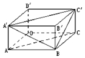
图4-2
【异面直线的公垂线】
和两条异面直线都垂直相交的直线叫做两条异面直线的公垂线.异面直线的公垂线存在唯一.
已知: 异面直线a、b.
求作: a、b 的公垂线.
作法: (1) 过a 上任意一点P，在b 与P 确定的平面内作b′∥b，且a 与b′确定平面α；
(2) 过b 作平面β⊥α，且β∩α ＝b″，b″∩a ＝A；
(3) 过点A 在平面β 内作AB⊥b 于点B.
则直线AB 即为异面直线a、b 的公垂线(如图4－3).
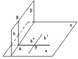
图4-3
说明: 由本题可知异面直线的公垂线存在，唯一性可以用反证法证明，请读者自己试一试.
【两条异面直线的距离】
两条异面直线的公垂线在这两条异面直线间的线段的长度，叫做两条异面直线的距离.
已知: 如图4 －4，异面直线a、b 所成的角为θ，它们的公垂线段AA′的长度为d.在直线a、b 上分别取点E、F，设A′E ＝m，AF ＝n，求: EF 的长.
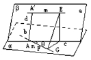
图4-4
解 设过b 与a 平行的平面为α，经过a 和AA′的平面为β，α∩β ＝c，则c∥a.
∵A′A⊥平面α，∴β⊥α.
在平面β 内，作EG⊥c 于G 点，则
EG⊥α 且AG ＝A′E，EG ＝A′A，∴在Rt△EGF 中，EF2＝EG2＋FG2＝d2＋FG2.
在△AFG 中，由余弦定理得FG2＝m2＋n2∓2mncosθ.
说明: 由本题计算过程可知，两条异面直线的距离，是分别在两条异面直线上的两点间的距离中最小的.本题结果可当公式用，其中如图4 －4 所示位置时，取负员，若F 在点A 的另一侧(或E 在点A′的另一侧) 时取正号.
怎样求异面直线的距离呢? 主要方法有:
(1) 直接法: 找出(或作出) 异面直线的公垂线段，求公垂线段的长.
(2) 转化法: 将线线距离转化为线面距离或面面距离，通过后者的计算求得异面直线的距离.
(3) 等积法: 利用三棱锥任何一个面都可以当作底面的特点，通过计算体积公式列方程求异面直线的距离.
(4) 最小值法: 利用异面直线的距离是分别在两条异面直线上两点间距离中最小者这一性质，构造函数求最小值.
(5) 公式法: 当已知EF 的长、m、n 以及θ 时，利用上面推导出的公式可求得异面直线的距离d.
下面举例说明.
例 正方体ABCD—A1B2C1D1的棱长为a，求以下各组异面直线的距离: (1) BD 与C1C；(2) AC 与BD1；(3) AB 与A1C；(4) BD 与B1C.试小结正方体中棱、面的对角线、体的对角线等当构成异面直线对时，它们的距离.
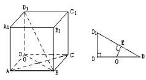
图4-5
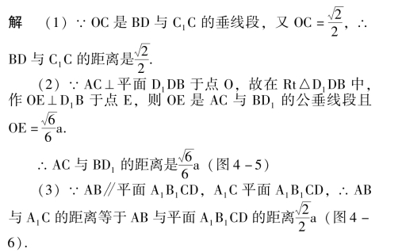
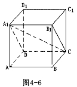
(4) ∵平面A1DB∥平面D1B1C，又AC1⊥平面A1DB且被平面A1DB 和平面D1B1C 三等分(理由见直线与平面所成的角).
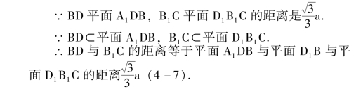
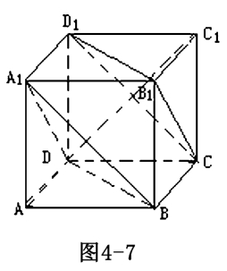
小结: 棱长为a 的正方体中异面直线的距离一览表
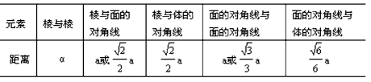
例 正△ABS 是等边圆锥的轴载面，BC 是底面圆中的弦，AB 是底面圆的直径，且∠ABC ＝60°，AB ＝2.求异面直线SA 与BC 的距离.
解 任取点M∈SA，在轴截面ABS 内，作MN⊥AB于N，设MN ＝x.又在平面MBC 内，作MP⊥BC 于P，连结NP，则NP⊥BC.
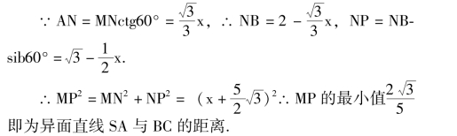
【空间两条直线平行的判定】
主要公理、定理如下:
(1) 平行于同一直线的两条直线平行；
(2) 垂直于同一平面的两条直线平行；
(3) 如果一条直线和一个平面平行，经过这条直线的平面和这个平面相交，那么这条直线就和交线平行(简记为“线面平行则交线平行”)；
(4) 如果两个平行平面同时和第三个平面相交，那么它们的交线平行(简记为“面面平行则交线平行”)；
(5) 一条直线分别与两个相交平面平行，则该直线与两平面的交线平行；
(6) 三个平面两两相交得到三条交线，如果其中有两条平行，则三条交线两两平行.
【空间两条直线垂直的判定】
注意垂直不一定相交:
(1) 如果两条直线所成的角是直角，则这两条直线垂直；
(2) 如果一条直线和一个平面垂直，那么这条直线就和这个平面内的任何一条直线都垂直；
(3) 三垂线定理及其逆定理.
【直线和平面的位置关系】
一条直线和一个平面的位置关系有且只有以下三种:
(1) 直线在平面内——有无数个公共点；
(2) 直线和平面相交——有且只有一个公共点；
(3) 直线和平面平行——没有公共点.
注意: 直线在平面内不能说成直线和平面重合，直线和平面相交或平行的情况统称为直线在平面外.
【直线在平面内的判定】
主要公理、定理如下:
(1) 直线上的两点在平面内，则直线在平面内；
(2) 过一点与已知直线垂直的直线，均在过这点与已知直线垂直的平面内；
(3) 过平面外一点与已知平面平行的直线，均在过这点与已知平面平行的平面内；
(4) 一直线平行一平面，则过平面内一点与已知直线平行的直线在已知平面内；
(5) 两平面垂直，过第一个平面内一点，垂直于第二个平面的直线，在第一个平面内.
【直线和平面平行的判定】
主要判定根据如下:
(1) 直线和平面没有公共点，则直线和平面平行；
(2) 如果平面外一条直线和这个平面内的一条直线平行，那么这条直线和这个平面平行；
(3) 两个平面平行，其中一个平面内的直线必平行于另一个平面.
【直线和平面垂直的判定】
主要定理如下:
(1) 如果一条直线和一个平面内的两条相交直线都垂直，那么这条直线垂直于这个平面(两垂线定理)；
(2) 如果两条平行直线中的一条垂直于一个平面，那么另一条也垂直于同一个平面；
(3) 一条直线垂直于两个平行平面中的一个平面，它也垂直于另一个平面；
(4) 两个相交平面分别垂直于第三个平面，则其交线也垂直于第三个平面:
(5) 如果两个平面垂直，那么在一个平面内垂直于它们交线的直线垂直于另一个平面.
【线段的射影】
自一点向平面引垂线，垂足叫做这点在这个平面上的射影.过斜线上的一点向平面引垂线，过垂足和斜足的直线叫做斜线在这个平面上的射影，垂足与斜足间的线段叫做这点到平面的斜线段在这个平面上的射影.
定理1: 斜线上任何一点在平面上的射影，一定在斜线的射影上.
定理2: 从平面外一点向这个平面所引的垂线段和斜线段中.
(1) 射影相等的两条斜线相等，射影较长的斜线段也较长(斜线长定理)；
(2) 相等的斜线段的射影相等，较长的斜线段的射影也较长(射影长定理)；
(3) 垂线段比任何一条斜线段都短.
【直线和平面所成的角】
分三种情况定义如下:
(1) 当直线和平面斜交时，斜线和它在平面上的射影所成的锐角，叫做这条直线和这个平面所成的角；
(2) 当直线和平面垂直时，直线和平面所成的角是直角；
(3) 当直线和平面平行或直线在平面内时，直线和平面所成的角是0°的角.
【三垂线定理及其逆定理】
三垂线定理及其逆定理是反映三条直线，即平面内一条直线、平面的一条斜线和这条斜线在平面内的射影之间位置关系的定理.换句话说就是，平面内的一条直线和这个平面的一条斜线垂直的充要条件是它和斜线在平面上的射影垂直.在研究空间图形的性质时，常常利用三垂线定理及其逆定理，将某些空间图形的问题转化为平面图形的问题.
三垂线定理: 在平面内的一条直线，如果和这个平面的一条斜线的射影垂直，那么它也和这条斜线垂直.
三垂线定理的逆定理: 在平面内的一条直线，如果和这个平面的一条斜线垂直，那么它也和这条斜线的射影垂直.
使用定理及其逆定理，要注意“四线、一面、三垂直” 中必备的条件，四线(平面的斜线、垂线、斜线在平面内的射影及平面内的一条直线) 都在哪里.还要抓住命题的结论，分清使用的是定理还是逆定理，不能混淆.
例 正方体ABCD—A1B1C1D1，棱长为a.求异面直线CB1与A1C1的距离(如图4 －8).
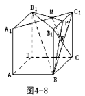
解∵BD1⊥A1C1，BD1⊥B1C (三垂线定理)
取B1C1中点P，连结D1P 和BP 分别交A1C1和B1C于点M 和点N.显然M 和N 分别是△B1C1D1和△B1C1B的重心，连结MN
则PM∶ MD1＝PN∶ NB ＝1∶ 2，∴MN∥BD1.
∴MN 是异面直线CB1与A1C1的公垂线段.
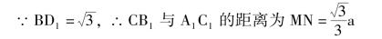
说明: 本题是利用三垂线定理的典型题目，有人称“简直把定理用活了!” 这里求异面直线的距离，用的是直接法，即作出异面直线的公垂线段，然后求公垂线段的长.本题还可以转化为平面与平面的距离求解，这种解法也要用到三垂线定理，详见两条异面直线的距离.
例 平面ABC 外一点P 到△ABC 三边的距离相等，试判断点P 在平面ABC 上的射影I 的位置(如图4 －9).
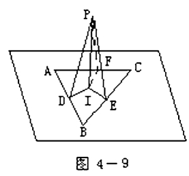
解 分别在平面PAB、平面PBC、平面PCA 内作PD⊥AB 于D，PE⊥BC 于E，PF⊥CA 于F，并且连结ID、IE、IF。
则ID⊥AB 于D，IE⊥BC 于E，IF⊥CA 于F (三垂线定理的逆定理)，∵PD ＝PE ＝PF，∴ID ＝IE ＝IF (勾股定理)
∴I 是△ABC 的内心.
说明: 本题若把已知条件改为“P 点到△ABC 三个顶点的距离相等” 呢? 改为“∠APB ＝∠BPC ＝∠CPA ＝90°” 呢? 改为“三个侧面PAB、PBC、PCA 和底面ABC所成的三个二面角相等” 呢? 这时点P 在平面ABC 上的射影I 的位置分别是△ABC 的外心、垂心、内心.请读者自己给出证明，除外心的证明外，垂心和内心证明都要用到三垂线定理或三垂线定理的逆定理.
【两个平面的位置关系】
两个不重合的平面只有两种位置关系，即相交和平行.
两平面相交: 有一条公共直线.
两平面平行: 没有公共点.
说明: 现行中学立体几何课本约定，没有特别说明的“两条直线或平面”，均指不重合的两条直线或平面.本书在叙述中，仍遵从这约定.
【两个平面平行的判定】
主要定理如下:
(1) 如果一个平面内有两条相交直线都平行于另一个平面，那么这两个平面平行；
(2) 如果一个平面内的两条相交直线和另一个平面的两条直线分别平行，那么这两个平面平行；
(3) 如果两个平面都与第三个平面平行，那么这两个平面也互相平行；
(4) 垂直于同一条直线的两个平面平行.
【两个平面垂直的判定】
主要定理如下:
(1) 如果两个平面相交成直二面的，那么这两个平面互相垂直；
(2) 如果一个平面经过另一个平面的一条垂线，那么这两个平面互相垂直；
(3) 如果一个平面垂直两个平行平面中的一个，那么必垂直另一个.
【二面角】
一个平面内的一条直线，把这个平面分成两部分，其中的每一部分叫做半平面.从一条直线出发的两个半平面所组成的图形叫做二面角.这条直线叫做二面的棱.这两个半平面叫做二面角的面.
要注意把空间图形中的二面角和平面图形中的角进行比较，强调相似处，突出要点.现列表对比如下:
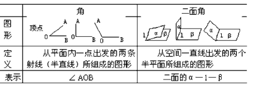
平面几何中可以把角理解为是一个旋转量，同样一个二面角也可以看作是一个半平面以其棱为轴旋转而成的.
【二面角的平面角】
以二面角的棱上任意一点为端点，在两个面内分别作垂直于棱的两条射线，这两条射线所成的角叫做二面角的平面角.二面角的大小，可以用它的平面角来度量.
怎样作二面角的平面角? 一般的方法是利用定义、利用直线和平面垂直的性质、利用三垂线定理和它的逆定理(如图4 －10).实际计算中，要具体问题具体分析.
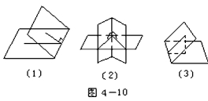
例 正方形ABDC 的边长为a，以对角线BC 为折痕折成直二面角A －bC －d，连结AD.求二面角B －AD—C、二面角A—CD－b 的大小.
解取BC 中点O、AD 中点E，连结BE、CE、AO、DO.则∠BEC 是B － AD—C 的平面的 (图4 － 11).
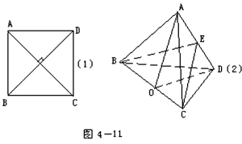
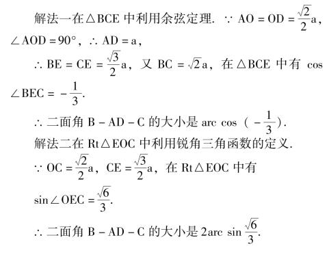
取BC 中点O、CD 的中点F，连结OF、AF，则∠AFO 是 A—CD—B 的平面角 ( 图 4 － 12 )
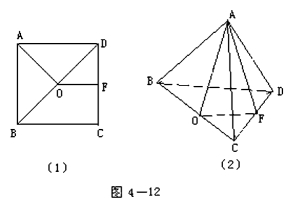
∵AO⊥BC，∴AO⊥平面BCD.
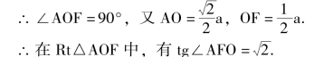
说明: 熟悉与掌握平面图形的折叠问题，有助于建立空间概念，以及认识空间图形与平面图形的联系与转化.这类问题，要画好平面图形与立体图形相对照，看到折叠前后，变中有不变(如一些角的大小和线段的长度)，不变中有变(如线段长度可能没变.但相对于某平面位置关系有改变).本题在作出所求二面角的平面角时，利用了特殊图形(如等腰三角形、直角三角形) 的性质、具体问题作了具体分析处理.
【两个平面平行的性质】
立体几何中的平面“相当于” 平面几何中的直线，对比平面几何中两条直线平行的性质，可以猜想出立体几何中两个平面平行的类似性质如下，它们的正确性请读者自己证明.
(1) 两个平面平行，其中一个平面内的直线必平行另一个平面；
(2) 如果两个平行平面同时和第三个平面相交，那么它们的交线平行；
(3) 一条直线垂直于两个平行平面中的一个平面，它也垂直于另一个平面；
(4) 一个平面垂直于两个平行平面中的一个平面，它也垂直于另一个平面；
(5) 夹在两个平行平面的平行线段相等；
(6) 一条直线和两个平行平面相交，那么它和两个平面所成的角相等；
(7) 两条直线被三个平行平面所截，截得的对应线段成比例；
(8) 过平面外一点只有一个平面和已知平面平行；
(9) 经过已知平面外一点且平行于该平面的直线，都在过已知点平行于该平面的平面内；
(10) 两个平行平面间的距离处处相等.
说明: 为了使两个平面平行的性质比较完整，有的性质不能和平面几何中两条直线平行的性质进行类比，我们也列举出来了.
关于空间直线与直线、直线与平面、平面与平面的平行与垂直关系的其它性质定理，本书中不再单独另列条目.这是因为不少性质定理换个角度看就可以当判定定理用.例如，两个平面垂直的性质定理“如果两个平面垂直，那么在一个平面内垂直于它们交线的直线垂直于另一个平面”，可以去判定一条直线与一个平面垂直，它们已经在相应的判定中列出了.
【线段和其射影的关系】
如果线段AB 所在的直线与平面α 所成的角为θ，AB在平面α 内的射影为A′B′，那么A′B′＝AB·cosθ.注意:当θ<90°时，AB>A′B′；当θ ＝0°时，AB ＝A′B′、当θ ＝90°时，A′B′＝0.在做题中，常常由于忽略了θ ＝90°的特殊情况，引起判断错误.
例 两条异面直线在同一个平面内的射影是().(A) 两条相交直线；(B) 两条平行直线；(C) 两条相交直线或两条平行直线；(D) 以上答案都不对.
例 一个直角，在一个平面内的射影也是直角的条件是什么?
说明: 第1 题容易选择了错误的答案(C).因为如果异面直线中的一条和平面垂直，那么它在平面内的射影将是一个点，所以正确的答案应该是(D).
第(2) 题容易错误地回答为“两条直角边分别与该平面平行”.事实上上述的回答是一个直角在一个平面内的射影也是直角的充分不必要条件，借助于模型不难得至正确答案.用三角板比出在平面内射影是直角的一种情况，再固定与平面平行(或在平面内) 的一条直角边，绕该直角边旋转三角板，另一条直角边变换直角的位置时，在平面内的射影都是直角(旋转的另一条直角边到与平面垂直的位置除外)，所以正确的答案是“直角的一边与平面平行或在平面内，另一边与平面不垂直时，直角在平面内的射影也是直角”.
【三角形和其射影的关系】
如果△ABC 所在平面与平面α 所成的角为θ，△ABC 在平面α 内的射影为△A′B′C′，那么△ABC 的面积S△ABC 和△A′B′C′的面积S△A′B′C′满足关系式S△A′B′C′＝S△ABC·cosθ.
例 已知正方体ABCD—A′B′C′D′，过AA′中点M 和正方体的顶点B、C′，作△MBC′.求平面MBC′与平面A′C′所成的二面角.
解 法一作出二面角的平面角求解.
过M、B、C′三点的平面交平面A′C′于C′N，直线C′N与MB 交于P 点(图4－13).
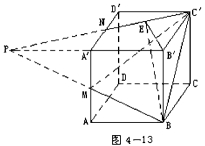
则BM、B′A′、C′N 三条直线交于P 点(三平面三交线定理).
在平面A′C′内，过B′作B′E⊥C′N 于E 点，连结BE，则BE⊥C′N (三垂线定理)，故∠B′EB 是所求二面角的平面角.
在Rt△PB′C′中，设B′C′＝a，则PB′＝2a，
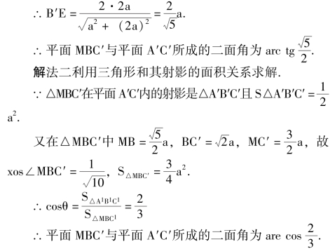
说明: 解法一中，延伸原空间图形的方法，是立体几何中常用的方法之一，计算二面角的平面角、异面直线所成的角有时需要用到这个方法.解法二中，利用了三角形的面积的射影定理，避免了在求二面角的大小时，作出二面角的平面角的过程，有时能使思路简单.
【平面多边形和其射影的关系】
平面多边形在另一个平面内射影的面积，等于原多边形的面积乘以两平面所成二面角的余弦.
【空间的基本轨迹】
空间的基本轨迹如下:
(1) 和一个定点距离为定长的点的轨迹，是以这点为球心，定长为半径的一个球面；
(2) 和两个定点距离相等的点的轨迹，是连接这两点的线段的垂直平分面；
(3) 和一个平面距离为定长的点的轨迹，是以这个定长为距离，和已知平面平行的两个平面；
(4) 和一个二面角的两个面距离相等的点的轨迹，是这个二面角的角平分面；
(5) 和两个平行平面距离相等的点的轨迹，是和这两个平行平面都平行且距离相等的一个平面.
说明: 空间的其它重要的轨迹还有以下几个.
(1) 和一个三角形的三个顶点距离相等的点的轨迹，是过这个三角形的外心且垂直于这个三角形所在平面的一条直线；
(2) 和一个三角形的三条边所在的直线距离相等的点的轨迹，是分别过这个三角形的内心和三个旁心且垂直于这个三角形所在平面的四条直线；
(3) 和两个定点距离等于定比的点的轨迹，是按定比内分和外分这两定点连线所得两个分点的连线为直径的一个球面，等等.
【空间计算题中常用的定理】
应注意归纳整理，例如:
(1) 如果一个角所在平面外一点到角的两边距离相等，那么这一点在平面上的射影在这些角的平分线上.(改为这点和角顶点确定的直线与角的两边成等角呢?)
(2) 从二面角内任一点向二面角的两个面分别作垂线，则这两条垂线所确定的平面垂直于这二面角的棱.
(3) 如果平面外一点到平面内一多边形各顶点距离相等，则该多边形有外接圆且该点在平面内的射影为外接圆圆心.(改为这点到多边形各边的距离相等呢? 还可以怎样改?)
(4) 若四面体的每组对棱互相垂直，则每一顶点在其相对面上的射影必为相对面上三角形的垂心.
【折叠问题】
熟悉与掌握平面图形的折叠问题，有助于建立空间概念，有利于认识立体几何与平面几何的联系，解这类问题，应画好平面图形和空间图形，并进行对照.识别元素间的位置关系和数量关系，注意变中有不变(如线段的长度)，不变中有变(如线段与平面的相对位置).
例 已知平行四边形ABCD，∠CBD ＝90°，两条对角线平方之比AC2∶ BD2＝7∶ 3.将平行四边形ABCD 所在的平面，沿对角线BD 翻则2AB2＋2BC2＝7x2＋3x2，∴AB2＋BC2＝5x2.
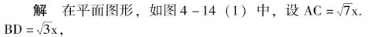
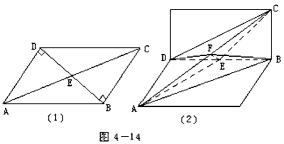
在翻折过程中，AB、BC 长度不变，AE ＝EC 不变.故取AC 中点F，连结EF，在等腰三角形AEC 中有EF⊥AC 于F.
又△ADC≌△CBA (边、边、边)，故DF ＝FB，在等腰三角形DFB 中有EF⊥DB 于E.
∴异面直线AC 和BD 间的距离就是其公垂线段EF的长.
∵∠CBD ＝90°，二面角C－BD－A 是直二面角.
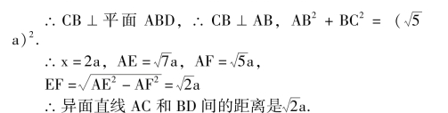
例 把一付三角板按图4 －15 拼接，并沿BD 折起，使两块三角板所在的平面互相垂直.求异面直线AD 和BC 所成的角.
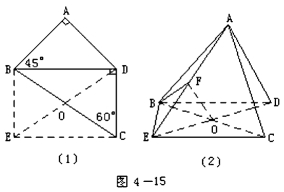
解法一 在平面图中，作BE∥CD，CE∥BD.折叠后画出其在空间图形中相应位置，取AE 中点F，连结OF、BF.
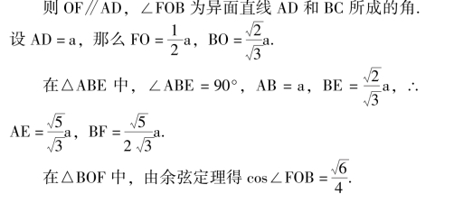
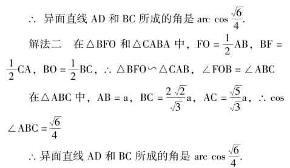
解法三 在平面图中，取BD 中点M，过M 作MH∥AD 交AB 于H，作MN∥BC 交CD 于N.折叠后画出其在空间图形中的相应位置，如图4 －16.
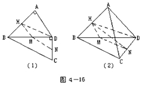
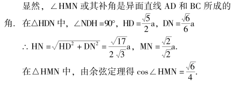
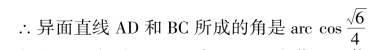
解法四 在平面BCD 中，过D 点作GD∥BC，过B点作GB∥CD，则∠ADG 是异面直线AD 和BC 所成的角，如图4 －17.
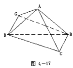
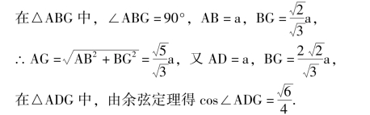
说明: 把立体几何中的问题转化为平面问题以后，要注意运用平面几何的知识，以上的题目充分说明了这一点.
【距离和角】
“求距离” 和“求角” 是立体几何中贯穿始终的重要内容，分别归类如下.
求距离大致可归纳为十类:
(1) 两点间的距离；
(2) 点到直线的距离；
(3) 点到平面的距离；
(4) 两平行直线间的距离；
(5) 两异面直线间的距离；
(6) 与平面平行的直线与该平面间的距离；
(7) 两平行平面间的距离；
(8) 多面体表面上两点间的最短距离；
(9) 旋转体表面上两点间的最短距离；
(10) 两点间的球面距离.求角大致可归纳为三类:
(1) 直线与直线所成的角；
(2) 直线与平面所成的角；(3) 二面角.
【多面体】
由若干个多边形(包括它的平面部分) 围成的几何体，叫做多面体.围成多面体的各个多边形叫做多面体的面，两个面的公共边叫做多面体的棱，若干个面的公共顶点叫做多面体的顶点.
把多面体的任何一个面伸展为平面，如果所有其它各面都在这个平面的同侧，这样的多面体叫做凸多面体.
一个多面体至少有四个面.多面体依照它的面数分别叫做四面体、五面体、六面体…….
【正多面体】
每个面都是有同数边的正多边形，在每个顶点都有同数棱的凸多面体，叫做正多面体.在正多面体里，所有的棱、所有的面角和所有的二面角都是相等的.
正多面体只能有五种: 用正三角形做面的正多面体只有正四面体、正八面体、正二十面体，它们每个顶点的棱数分别是3、4、5；用正方形做面的正多面体只有正六面体，它的每个顶点的棱数是3；用正五边形做面的正多面体只有正十二面体，它的每个顶点的棱数也是3.不能用边数大于五的正多边形做正多面体的面，否则凸多面角各面角的和将不小于四直角，与凸多面角的性质定理矛盾.
【欧拉定理】
表面连续(不破裂) 变形，可变形为球面的多面体叫做简单多面体.棱柱、棱锥、棱台、正多面体、凸多面体都是简单多面体.
欧拉定理: 简单多面体的顶点数V、棱数E、面数F，有下面关系V ＋F－E ＝2.
欧拉(公元1707—公元1783，瑞士) 是18 世纪最著名的数学家.欧拉主要是在俄国圣彼得堡科学院和德国柏林科学院工作，内容多是与军事和其它实际应用相联系的，因此取得了广泛的成就.在他生活的时代已出现的数学和各个分支中，几乎都留下了欧拉的痕迹.如变分法中的欧拉方程，复数中的欧拉公式，立体几何中的欧拉定理，解析几何中的欧拉角，极限中的欧拉常数，含参变量积分中的欧拉积分，常微分方程中的欧拉变换等等.欧拉在处理“哥德巴赫猜想” 和“费尔玛大定理” 等问题，表现出实事求是光彩照人的科学态度.正是由于欧拉把哥德巴赫求教于他的信公布于世，并声明自己无法证明这个问题，才使得“哥德巴赫猜想” 成了世界著名的数学难题.
【四面体的性质】
四面体作为最简单、最基本的几何体，了解它的性质是必要的.与四面体关系密切的多面体是其外接平行六面体(过四面体三组对棱所作的三组平行平面围成的平行六面体)，通过外接平行六面体，可以得出四面体下面的(1)，(2) 性质.由反证法等，还可以得到下面的(3)，(4) 等性质.
(1) 四面体各棱长的平方和，等于三组对棱中点连线的平方和的四倍；
(2) 四面体四中线(连四面体各顶点与其对面重心的线段) 交于一点，这点称为四面体的重心，重心分各中线从顶点算起的两部分之比为3∶ 1.
(3) 任何一个四面体总有一个端点，从这个端点发出的三条棱为三边可以作成一个三角形；
(4) 除四面体外，不存在任何一种凸多面体，它的每一个顶点和所有其余的顶点之间都有棱相连接；
(5) 若四面体四个面的面积相等，则四面体的对棱分别相等(对棱分别相等的四面体称为等腰四面体或等面四面体)；
(6) 若四面体的外接球球心与内切球球心重合，则四面体的对棱分别相等；
(7) 若四面体的两组对棱互相垂直(有两组对棱互相垂直的四面体称为重心四面体或正交四面体)，则第三组对棱也互相垂直；
(8) 若四面体的两组对棱互相垂直，则三组对棱中点连线(段) 都相等.
【拟柱体】
所有的顶点都在两个平行平面内的多面体叫拟柱体.它在这两个平面内的面叫做拟柱体的底面，其余各面叫做拟柱体的侧面.两底面之间的距离叫做拟柱体的高.显然，拟柱体的侧面是三角形、梯形或平行四边形.
两底面是矩形，并且它们的对应边平行，这样的拟柱体叫做长方台.
下底面是梯形或平行四边形，上底面变成了与下底面的平行边平行的线段，这样的拟柱体叫做楔体.
棱柱、棱锥、棱台都是特殊的拟柱体.
【棱柱】
有两个面互相平行，其余各面都是四边形，并且每相邻两个四边形的公共边都互相平行，由这些面所围成的几何体叫做棱柱，两个互相平行的面叫做棱柱的底面，其余各面叫做棱柱的侧面.两个侧面的公共边叫做棱柱的侧棱，侧面与底面的公共顶点叫做棱柱的顶点，不在同一个面上的两个顶点的连线叫做棱柱的对角线，两个底面间的距离叫做棱柱的高.
【棱柱的分类】
分类标准不同，有一种按侧棱与底面成垂直与否分类，另一种按底面多边形的边数分类.即:
说明: 四棱柱中，底面是平行四边形的四棱柱叫做平行六面体.侧棱与底面垂直的平行六面体叫做直平行六面体.底面是矩形的直平行六面体叫做长方体.棱长都相等的长方体叫做正方体.
【棱柱的性质】
棱柱的主要性质如下:
(1) 棱柱的侧棱相等，侧面是平行四边形；
(2) 平行于底面的截面与两底面是全等的多边形；
(3) 过不相邻的两条侧棱的截面是平行四边形；
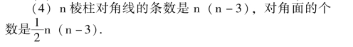
【平行六面体的性质】
平行六面体的主要性质如下:
(1) 六个面都是平行四边形，相对的两个面平行且相等；
(2) 四条对角线交于一点且被这点平分；
(3) 各对角线的平方和等于它的各条棱的平方和.
说明: 请读者与平面几何中平行四边形的性质进行比较，发现相似处.
例 平行六面体的底面ABCD 中，∠DAB ＝60°且ABCD 是菱形，侧棱和底面所成的角也是60°.如果对角面ACC1A1垂直底面，求证对角面BB1D1D 的面积与对角面ACC1A1的面积之比是2∶ 3.
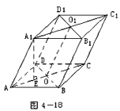
证明 在平面AC1内，作A1E⊥AC 于E (如图4 －18)，
则A1E⊥底面AC，∴A1A⊥BD (三垂线定理).
∴O1O⊥BD，对角面BB1D1D 的面积SBB1D1D ＝BD·A1A.
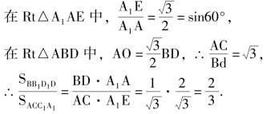
【长方体的性质】
长方体有如下一些性质:
(1) 长方体的任意一条对角线的长的平方，等于一个顶点上三条棱长的平方和；
(2) 长方体的一条对角线同过这条对角线一端的三条棱的交角余弦的平方和为1；
(3) 长方体的一条对角线同过这条对角线一端的三个面所成的角的余弦的平方和为2.
例 长方体ABCD － A1B1C1D1中，AB ＝AD ＝4cm，AA1＝2cm.求顶点D 到对角线A1C 的距离，以及异面直线AD 和A1C 所在的角.
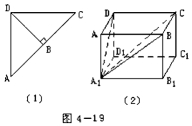
解∵CD⊥平面A1D，∴CD⊥A1D (如图4 －19)，
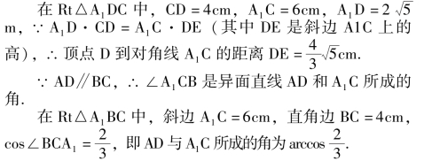
说明: 为了计算中看清直观图中某部分的数量关系和位置关系，常常把这部分单独画出来.本题中的辅助图形，让我们很容易地利用平面几何知识，求出所要的结果.
【正方体的性质】
正方体的六个面是全等的正方形.正方体有立体几何的百宝箱之誉，通过正方体可以编选出包括第一章立体几何理论的基础部分的全部内容的题目.
例 正方体ABCD －A1B1C1D1中，求证A1C1⊥平面BDD1B1
证法一 利用直线和平面垂直的判定定理.
∵A1C1⊥B1D1，A1C1⊥BB1，B1D1∩BB1＝B1，∴A1C1⊥平面BDD1B1.
证法二 利用平面和平面垂直的性质.
∵ 平面 A1B1C1D1⊥平面 BDD1B1，A1C1平面A1B1C1D1，且A1C1⊥交线B1D1，∴A1C1⊥平面BDD1B1.
证法三 利用平面和平面垂直的性质的推论.
∵平面A1B1C1D1⊥平面BDD1B1，平面AA1C1C⊥平面BDD1B1，且平面A1C1∩平面AC1＝A1C1，∴A1C1⊥平面BDD1B1.
说明: 通过本题可以想一想怎样证直线和平面垂直.
例 正方体ABCD － A1B1C1D1中，求DB1和平面BB1C1C 所成的角，以及平面A1BD 和平面C1BD 的夹角.
解∵CD⊥平面BB1C1C.
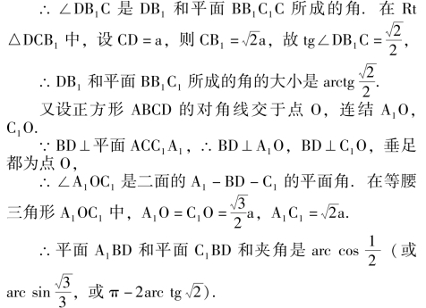
说明: 通过本题可以想一想怎样求各类角的大小? 最后平面A1BD 在等腰△A1OC1中作底边A1C1上的高OE1，然后在Rt△A1OE1中利用锐角三角函数的定义求得的；第三种形式的答案则是利用求∠A1OE1的余角∠A1OA 而得的.这三种计算方法都有一定的代表性，做题中应该寻求最简便的计算方法.
例 (1) 一个球的半径是R，放在墙角(直三面角) 与其三个面都相切，求球心与墙角顶点的距离；
(2) 一个球的半径是R，与直三面角的三条棱都相切，求球心与直三面角顶点的距离；
(3) 正方体的棱长是a，AB 是它的对角线，一个球与正方体相交于B 点的三个面相切，且和过A 点的三条棱相切，求这个球半径的长.
解 (1) 设墙角顶点是B，球心在点O.因为球O与墙角的三个面相切，所以球心O 点与墙角顶点B 的距离是棱长为R 的正方体的对角线OB 的长(如图4 －20).
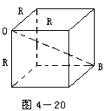
(2) 设直三面角顶点是A，球心在点O.
解 法一过O 作截面BCD⊥AO，交直三面角的三条棱于B、C、D 三点(如图4 －21).
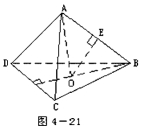
则可证△BCD 是正三角形，△ABC、△ACD、△ADB是全等的等腰直角三角形.
在Rt△AOB 中，作OE⊥AB 于E，则OE ＝R，设AB＝a
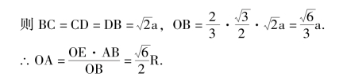
解 法二设直三面的顶点是A，球心在点O.因为球O 与直三面角的三条棱相切，所以球心O 点与直三面角顶点A 的距离，可以看成是各个面上对角线的长均是R的正方体的对角线OA 的长(如图4 －22).
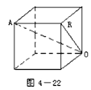
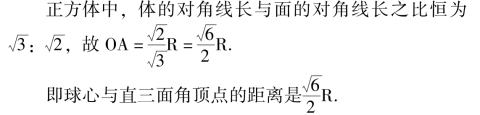
(3) 如图4 －23 (1)，由已知条件易证球心O 在正方体的对角线AB 上.
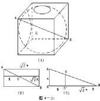
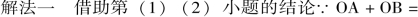
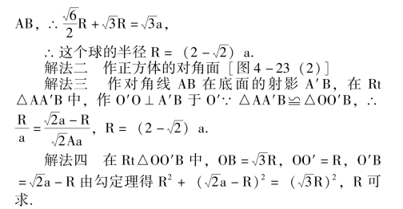
说明: 综合法和分析法是数学思维的最基本的方法.对于比较复杂的题目，可以分步一小块一小块地考虑，然后再进行综合.弄清本题第(1)、(2) 小题的位置关系和数量关系，为解决第(3) 小题的问题创造了条件.
【棱柱的侧面积】
把棱柱的侧面沿一条侧棱剪开后展在一个平面上，展开图的面积就是棱柱的侧面积.
定理1: 如果直棱柱的底面周长是c，高是h，那么它的侧面积是S 直棱柱侧＝ch.
定理2: 斜棱柱的侧面积等于它的直截面(垂直于侧棱的截面) 的周长与侧棱长的乘积.
例 斜三棱柱ABC －A1B1C1的底面是边长为a 的正三角形，侧棱长为b，一条侧棱AA1 和底面相邻两边AB、AC 都成45°角.求侧面积和高.
解法一 作A1D ⊥底面ABC 于D，则AD 平分∠CAB；在底面ABC 内，过D 点作DE⊥AB 于E 点，连结A1E，则A1E⊥AB (图4 －24 (1)).
【棱锥】
有一个面是多边形，其余各面是有一个公共顶点的三角形，由这些面所围成的几何体叫做棱锥.这个多边形叫做棱锥的底面，其余各面叫做棱锥的侧面.相邻侧面的公共边叫做棱锥的侧棱，各侧面的公共顶点叫做棱锥的顶点，顶点到底面的距离叫做棱锥的高.
【棱锥的性质】
棱锥有下面一些性质:
(1) 棱锥的对角面(过棱锥不相邻的两条侧棱的截面) 是三角形；
(2) 如果棱锥被平行于底面的平面所截，那么侧棱和高被这个截面分成成比例线段；截面和底面相似，并且它们面积的比等于截得的棱锥的高和已知棱锥的高的平方比.
例 图4 －25 中，底面ABCD 是正方形，其中心为O，SO⊥平面ABCD，点E∈平面SBC.
(1) 过A、D、E 作截面(要写作法)；
(2) 作出锥面在底面上的射影.
解(1) 作法.在平面SBC 内，过E 点作FG∥BC 交SB 于F，交SC 于G.
连结AF、DG，则梯形AFGD 是所求截面.
(2) 作法.在平面SOB 内，过F 点作FH⊥OB 于H；在平面SOC 内，过G 点作GK⊥OC 于K，连结AH、DK、KB，则梯形AHKD 是截面AFGD 在底面上的射影.
请读者自己完成证明.
说明: 立体几何作图题和平面几何作图题的不同之处主要是三点.一是立体几何中只着重叙述作图方法步骤及理由，不可能和平面几何一样作出完全符合实际的图形，作出来的只是示意图.二是立体几何中作图工具也只有直尺、圆规，作平面、圆柱、球等并没有新工具，只要具备确定平面、圆柱、球等的条件，即认为该空间图形可作，作示意图说说而已.三是立体几何作图中的关键是确定直线和平面的位置，而平面几何作图中的关键是确定点和直线的位置.
本题在作图过程中，要运用理论进行分析，才能确定过E 点的直线FG 的位置，以及AF 在平面ABCD 上射线的位置等，第(2) 小题的出错率较高.
【正棱锥】
如果一个棱锥的底面是正多边形，并且顶点在底面的射影是底面中心，这样的棱锥叫做正棱锥.
【正棱锥的性质】
正棱锥主要有下列性质:
(1) 正棱锥各条侧棱相等；
(2) 正棱锥的各个侧面是全等的等腰三角形；
(3) 正棱锥的各个侧面等腰三角形底边上的高叫做正棱锥的斜高，正棱锥的各条斜高相等；
(4) 正棱锥中存在四个重要的直角三角形，它们是由正棱锥的高、斜高和斜高在底面上的射影组成的直角三角形；由正棱锥的高、侧棱和侧棱在底面上的射影组成的直角三角形；由正棱锥的斜高、侧棱和底面边长之半组成的直角三角形；由正棱锥底面边长之半、边心距和顶心距组成的直角三角形等；
(5) 正棱锥各侧面和底面所成的二面角都相等.
例 正四棱锥的侧面和底面成60°的二面角，则这个二面角的平分面垂直于其所对的侧面.
已知: 正四棱锥S－ABCD，侧面与底面成60°的二面角.
求证: 二面角S－AD－C 的平分面AEFD⊥平面SBC.
证明过AD 中点M、BC 中点N 作截面SMN 交平分面AEFD 于MH (图4 －26).
则∠SMN ＝60° ＝∠SNM，∠SMH ＝∠NMH ＝30°.
∴△SMN 是正三角形，MH⊥SH，又AD⊥SN
∴SN⊥平分面AEFD，∴平面SBC⊥平分面AEFD.
【棱锥的侧面积】
注意: 棱锥的全面积等于侧面积与底面积之和.
例 棱锥的底面是等腰三角形，这个等腰三角形的底边长12cm，一腰长10cm，且棱锥的侧面与底面所成的二面角皆为45°，求这个棱锥的侧面积.
解法一 如图4 －27 是符合题设条件的棱锥V －ABC，则顶点V 在底面ABC 上的射影O 是△ABC 的内心.
【三棱锥的性质】
三棱锥即四面体，它的任何一个面都可以当做底面，和正方体一样，三棱锥是立体几何中的又一个百宝箱，通过三棱锥也可以编选出包括第一章立体几何理论的基础部分的全部内容的题目.
例 平面a 内有半径为a 的圆O，过直径AB 的端点A，有PA ⊥平面a，且PA ＝a，C 是圆O 上的一点，∠CAB ＝60°.求三棱锥P－BDC 的侧面积.
解 ∵AC⊥CB，PA⊥平面ABC.
∴PC⊥CB (三垂线定理)
说明: 本题考察体中线面关系是否清楚，重点是弄清三个侧面三角形的特点，分别是直角三角形、等腰三角形、以及含135°角的钝角三角形，因此计算面积的方法也各不相同.
例 如图4 －29 在三棱锥S －ABC 中，S 在底面上的射影N 位于底面的高CD 上.M 是侧棱SC 上的一点，使截面MAB 与底面所成的角等于∠NSC.求证SC 垂直于截面MAB.
证法一连结SD，MD
则SD⊥AB (三垂线定理)，∴AB⊥平面CDS.
∴AB⊥MD，∠MDC 是截面MAB 与底面所成二面角的平面角，故∠MDC ＝∠NSC.
在△MDC 和△NSC 中，∠MDC ＝∠NSC，∠DCS 公用，故∠DMC ＝∠SNC ＝90°
∴DM⊥SC，又AB⊥SC，∴SC⊥截面MAB.
证法二∵SN⊥平面ABC
∴直线SC，DM 在平面ABC 内的射影同为直线CD.
又CD⊥AB，∴SC⊥AB，DM⊥AB (下同证法一)
说明: 要重视逻辑推理能力的培养，特别是三垂线定理的灵活运用.
心而平行于一个侧面的平面所截.求这截面的面积、以及该截面和底面的夹角.
例 正三棱锥的侧面积是18 3cm2，且被一个过底面中
例 在三棱锥A －BCD 中，如果两组对棱AB ＝CD、AD ＝CB，求证第三组对棱BD 和AC 中点的连线PQ 是这组异面直线的公垂线段.
分析: 把△BCD 绕BD 旋转到△ABD 所在平面(图4 －31).
在平面图形中，易看出△ABD≌△CDB (边边边)，故∠ABD ＝∠CDB，△ABP≌△CDP (边角边)，AP ＝CP.所以△APC 是等腰三角形，故PQ⊥AC 于Q，同理PQ⊥BD 于P.
对于空间图形，上述推理仍然正确，请读者自己完成(注意: 旋转平面不会改变平面内线段的长度和角的大小).
说明: “立体” 转化为“平面” 是处理立体几何问题的重要方法之一.将空间的直线与平面之间的关系合理地转化到同一平面内进行研究，常常可以采取截(截面)、展(展开图)、移(平移或旋转) 等方法.
【棱台】
用一个平行于棱锥底面的平面去截棱锥，底面和截面之间的部分叫做棱台.原棱锥的底面和截面叫做棱台的下底面和上底面，其它各面叫做棱台的侧面.相邻侧面的公共边叫做棱台的侧棱，上、下底面之间的距离叫做棱台的高.
棱台按底面的边数分为三棱台、四棱台、五棱台…….
【棱台的性质】
棱台具有如下性质:
(1) 棱台的两个底面是相似多边形；
(1) 棱台的各个侧面都是梯形；
(3) 棱台的各条侧棱延长后相交于一点；
例 棱台两底面对应边之比是13∶ 17，中截面的周长是45cm，求两底面的周长.
解 由梯形中位线的性质知，如果上底面周长为13xcm，下底面周长为17xcm，则中截面的周长为15xcm.
∴15x ＝45，x ＝3，∴13x ＝39，17x ＝51.
答: 两底面的周长分别是39cm 和51cm.
例 已知棱台上、下底面面积为S1，S2，平行于底面的截面分棱台高自上而下两部分之比为m∶ n，求截面面积S.
解法一利用补形把台恢复成锥(图4 －32).
设小棱锥、中棱锥、大棱锥的高分别为x、x ＋my、x＋ (m ＋n) y，
解法二利用相似形的性质(图4 －33).
设在一个侧面梯形中，上、下底边长分别为a、b，截面边长为c，其余如图所示.
【正棱台】
由正棱锥截得的棱台叫做正棱台.
【正棱台的性质】
主要的性质如下:
(1) 正棱台的侧棱相等；
(2) 正棱台的各个侧面是全等的等腰梯形，各等腰梯形的高相等，它叫做正棱台的斜高；
(3) 正棱台的两底面以及平行于底面的截面是相似正多边形；
(4) 正棱台两个底面中心的连线垂直于底面，上底面在下底面内的射影是下底面的位似形，位似中心是下底面的中心；
(5) 正棱台中有三个直角梯形: 正梭台的两底面中心连线、相应的边心距和斜高组成一个直角梯形；两底面中心连线、侧棱和两底面相应的半径组成一个直角梯形；两底面边长的一半、侧棱和斜高组成一个直角梯形.这三个直角梯形在解题中用处很大.
例 正四棱台A1B1C1D1－ ABCD 的高O1O ＝63cm，斜高E1E ＝65cm，两底面边长的比为5∶ 3.求这两底面的边长a、b，侧棱长l，侧棱与底面所成的角θ，侧面与底面所成的角ω，以及对角线长m.
说明: 本题主要考查三个直角梯形及对角面中的有关运算.
【棱台的侧面积】
棱台的侧面展开图是由各个侧面组成的，展开图的面积就是棱台的侧面积.
棱台的全面积等于它的侧面积与上、下底面积的和.
答: 棱台的侧面积是1920cm2.
例 在正四棱台内作一个内接棱锥，该棱锥以这个棱台的上底面正方形作底，以下底面正方形的中心作顶点.如果棱台上、下底面的边长分别为a 和b，棱台和这个内接棱锥的侧面积相等，求这个内接棱锥的高，以及本题有解的限制条件.
解 设内接棱锥的高为x.
【旋转体和旋转面】
在同一个平面内有一条已知直线和一条曲线(可以是折线或直线)，当这个平面绕已知直线旋转一周时，这条曲线(可以是折线或直线) 所成的面叫做旋转面.这条已知直线叫做旋转轴，这条曲线(可以是折线或直线)叫做母线.如果母线是一条和轴平行的直线，那么所形成的旋转面叫做圆柱面；如果母线是一条和轴相交的直线，那么所形成的旋转面叫做圆锥面，母线和轴的交点叫做圆锥面的顶点；如果母线是直径在轴上的一条半圆弧，那么形成的旋转面叫做球面.由旋转面或旋转面和垂直于轴的平面所围成的封闭的几何体，叫做旋转体.立体几何课本里，主要研究圆柱、圆锥、圆台和球等特殊的旋转体.
【圆柱】
如果用垂直于轴的两个平面去截圆柱面，那么两个截面和圆柱面围成的封闭几何体叫做圆柱.圆柱也可以看作是由一个矩形绕着它的一边所在的直线旋转一周所形成的几何体.
原来圆柱面的轴叫做圆柱的轴；原来圆柱面的母线夹在两个平行平面之间的部分叫做圆柱的母线；原来的圆柱面夹在两个截面之间的部分叫做圆柱的侧面；两个截面被圆柱面所截的部分叫做圆柱的底面；两个底面之间公垂线段的长度叫做圆柱的高.
【圆柱的性质】
圆柱具有以下性质:
(1) 圆柱的两个底面是相等的圆，它们所在的平面互相平行；
(2) 圆柱的轴经过两个底面的圆心并且垂直于两个底面，连接两个底面的圆心线段的长等于圆柱的高；
(3) 圆柱的母线垂直于底面，平行且相等，它们的长度等于圆柱的高.
例 高是10cm 的圆柱，用一个平行于轴且与轴相距2cm 的平面去截它，如果截面在圆柱底面内截得的弧含120°.求截面面积.
解显然截面为矩形，且矩形的高等于圆柱的高10cm.
又矩形的长为底面中120°的弧所对的弦长.
∵弦心距d ＝2cm，弦所对的圆心角θ ＝120°.
∴弦长a ＝2dtg60° ＝4 3cm.
∴截面面积为40 3cm.
【圆锥】
如果用不经过圆锥面顶点并且垂直于圆锥面的轴的平面去截圆锥面，那么该截面和圆锥面所围成的封闭几何体叫做圆锥.圆锥也可以看做是一个直角三角形绕着它的一条直角边所在的直线旋转一周而形成的几何体.
原来圆锥面的顶点和轴分别叫做圆锥的顶点和轴；圆锥面的母线夹在顶点和截面之间的部分叫做圆锥的母线；圆锥面夹在顶点和截面之间的部分叫做圆锥的侧面；截面被夹在圆锥面之间的部分叫做圆锥的底面；顶点到底面的垂线段的长度叫做圆锥的高.
【圆锥的性质】
圆锥的主要性质是:
(1) 圆锥的底面是一个圆，它所在的平面垂直于圆锥的轴；
(2) 圆锥的轴经过顶点和底面圆的圆心，顶点和底面圆心的连线段的长等于圆锥的高；
(3) 圆锥的母线都以顶点为公共端点且长度相等.各条母线和轴的夹角相等，和底面所成的角也相等；
(4) 圆锥的高、母线、母线在底面的射影(即底面圆的半径) 组成一个直角三角形.
例 圆锥的母线长为l，它和底面所成的角为θ，求这个圆锥的内接正方体的棱长.
说明: 本题当然应该作出轴截面进行计算.但是初学者想不清楚正方体的轴截面中的形状，错误地把轴截面画成等腰三角形内接一个正方形，如图4 －36 (1)
正确的轴截面应画成等腰三角形内接一个矩形，如图4 －36 (2).在这个正确的平面图内，利用相似三角形中所有的对应线段成比例的知识，容易得到关于正方体棱长x 的方程:
【圆台】
用平行于底面的一个平面去截圆锥，截面与底面之间的圆锥的一部分叫做圆台，圆台也可以看作是由一个直角梯形绕着垂直于底边的腰所在的直线旋转一周所形成的几何体.
原来圆锥的轴叫做圆台的轴；圆锥的母线和侧面夹在截面和底面之间的部分分别叫做圆台的母线和侧面；截面和原来圆锥的底面叫做圆台的底面；两个底面之间公垂线段的长度叫做圆台的高.
【圆台的性质】
圆台具有下列性质；
(1) 圆台的两个底面是不等的两个圆，它们所在的平面平行；
(2) 圆台的轴经过两个底面圆的圆心，并且和底面垂直；
(3) 圆台的母线长都相等，并且各条母线的延长线交于一点；
(4) 圆台两个底面圆心的连线段的长等于圆台的高；
(5) 圆台上下底面圆心的连线段、一条母线和经过这条母线两个端点的上、下底面半径组成一个直角梯形.
(2) 求截得此圆台的圆锥的高；
(3) 求圆台的顶角(即截得此圆台的圆锥的轴截面的顶角)、侧面展开的扇形角(用弧度表示)；
(4) 求圆台的全面积.
解(1) 作示意图4 －37，截面A1ABB1.
说明: 在圆柱、圆锥、圆台的问题，常常要注意利用轴截面(经过轴的平面截圆柱、圆锥、圆台所得的截面).圆柱的轴截面是矩形，恒有关系式l ＝h；圆锥的轴截面是等腰三角形，恒有关系式l2＝h2＋R2；圆台的轴截面是等腰梯形，恒有关系式l2＝h2＋ (R －r)2，其中l 表示母线长，h 表示高，R、r 表示底面半径.圆柱、圆锥、圆台平行于底的截面是圆，要注意利用相似比.
【圆柱、圆锥、圆台的侧面积】
把圆柱、圆锥、圆台的侧面沿着它们的一条母线剪开后展在平面上，展开图的面积就是它们的侧面积.
圆柱、圆锥、圆台的全面积，分别等于它们的侧面积与底面积之和.
定理1: 如果圆柱底面半径是r，周长是c，侧面母线长是l，那么它的侧面积是S 圆柱侧＝cl ＝2πrl.
说明: 把圆台侧面展开图看成曲边梯形，利用梯形的面积公式，很容易记住圆台侧面积的公式.
解 作底面△ABC 的高AD，连结VD，则∠VDA ＝θ.
设AD 与圆柱底面圆O 交于E，过E 作B′C∥BC 交AB、AC 于B′、C′点，则☉O 是正△AB′C′的内切圆.
【球】
半圆以它的直径所在的直线为旋转轴，旋转一周所成的曲面叫做球面.球面所围成的几何体叫做球体.简称球.半圆的圆心叫做球心.连结球心和球面上任意一点的线段叫做球的半径.连结球面上两点并且经过球心的线段叫做球的直径.
球面也可以看作与定点 (球心) 的距离等于定长(半径) 的所有点的集合(轨迹).
同一个球的所有半径都相等，所有直径都相等，直径等于半径的两倍.
【球的切面和切线】
和球只有一个公共点的平面叫做球的切面，和球只有一个公共点的直线叫做球的切线，切面或切线和球的公共点叫做切点.
球的切面和切线的判定定理是:
(1) 经过球半径的外端且垂直于这条半径的平面是这个球的切面；
(2) 经过球半径的外端且垂直于这条半径的直线是这个球的切线；
球的切面和切线的性质定理是:
(1) 球的切面或切线垂直于过切点的球的半径；
(2) 经过球面上一点的球的切线有无数条，这些切线都在过这点且垂直于过这点的球半径的平面内(即过这点的切面内)；
(3) 经过球外一点作球的切线有无数条，它们的切线长度相等，切线与该点和球心连线的夹角相等.
说明: 读者可试着把球的切线和切面与平面几何中圆的切线进行比较，并证明上面讲到的定理.
例 选择答案:
例 求两两相切的四个球的外切圆锥轴截面的顶角.
解 设四个球的球心是Oi，其中i ＝1，2，3，4，则O1－O2O3O4是棱长为2R 的正四面体.
设O1点的平面O2O3O4内的射影是D，
则过O1、O2、D 作的截面是外切圆锥的轴截面ABC(如图4 －40).
说明: 本题涉及球与球相切，球与圆锥面相切的概念，并且位置关系不容易想，难度较大.
【球的表面积】
球面面积等于它的大圆面积的4 倍.即S 球面＝4πR2，其中R 为球半径.
证明球的表面积公式要用到极限的思想和下面的定理.
定理: 球面内接圆台(圆台上、下底面是球的两个平行截面) 的高为h，球心到母线的距离为p，那么圆台的侧面积为2πph.
例 高为h 的圆锥内有一个球O1 与圆锥底面、侧面都相切，另有一个小球O2 与球O1 相切且与圆锥侧面相切，要使球O2 有最大的表面积、求圆锥的顶角有多大，并求出球O2 的最大表面积.
解 作出轴截面如图4 －41.
【球冠】
球面被平面所截得的一部分叫做球冠，截得的圆叫做球冠的底，垂直于截面的直径被截得的一段叫做球冠的高.
定理: 球冠的面积等于截成它的球面上大圆周长与球冠的高的积，即S 球冠＝2πRh.
【球扇形】
在半圆内的一个扇形，绕着半圆直径所在的直线旋转一周所得到的几何体叫做球扇形，球扇形可以看作是由一个球带和两个圆锥面围成的或由一个球冠和一个圆锥面所围成的.这里的球带或球冠叫做球扇形的底面，圆锥面叫做球扇形的侧面.
解 设球半径为R，大球冠的高为h，截面圆半径为r，则小球冠的高为(2R－h)，且由直角三角形中的射影定理和勾股定理有r2＝h (2R－h)，(h－R) 2 ＋r2＝R2.
消法r 得关系式h2＝2R (2R －h)，即大球冠的高是小球冠的高和球的直径的比例中项.当R ＝2 时，球扇形的底面积为8(3 － 5)π.
【球带】
球面夹在两个平行截面之间的部分叫做球带，截得的两个圆叫做球带的底，两个平行截面之间的距离叫做球带的高.
定理: 如果球的半径是R，球带的高是h，那么球带的面积S 球带＝2πRh.
例 球带的两个底面的半径分别为20cm 和24cm，球的半径是25cm，求球带的面积.
∴球带的面积是1100πcm2.
【球缺】
球冠和截得它的截面所围成的几何体叫做球缺，球冠的高叫做球缺的高，截面叫做球缺的底面.球缺也可以看成是一个球被平面截下来的一部分.
例 三角形各边长分别是13cm、14cm、15cm，且各边都和一个半径是5cm 的球相切，求三角形所在平面截球所得的球缺的高.
解 三角形三边与球缺的底面小圆相切，故三角形内切圆的半径r 即为球缺底面圆的半径.
即三角形所在平面截球所得的球缺的高是8cm和2cm.
【球台】
球带和截得它的两个截面所围成的几何体叫做球台，球带的高叫做球台的高，两个截面叫做球台的底面.球台也可以看成是一个球被两个平行平面所截，两个截面之间所夹的球的部分.
例 地球半径为R，北回归线的纬度是北纬23.5°，北极圈的纬度是北纬66.5°，试求以北回归线所在圆面和北极圈所在圆面为两底面的球台的高.
解 球台的高h ＝R (1－sin23.5°) －R (1－sin66.5°)
＝R (sin66.5° －sin23.5°)
【展开图】
柱、锥、台的侧面展开图分述如下:
(1) 直棱柱的侧面展开图是一个矩形，它的长等于底面多边形的周长，宽等于棱柱的高；
(2) 圆柱的侧面展开图是一个矩形，它的长等于圆柱底面圆的周长，宽等于圆柱的高；
(3) 正棱锥的侧面展开图是由若干个全等的等腰三角形组成的图形，等腰三角形的底边长等于正棱锥的底面边长，腰长等于正棱锥的侧棱长；
解 作出矩形纸折叠前后的对照图4 －42.
∵A1D ＝DE ＝EA ＝ 3折叠后长度不变.
例 四面体ABCD 中，面ABC 和面BCD 都是边长为2a 的等边三角形，且AD ＝2 2a，要求从AB 的中点M 沿四面体表面到达CD 的中心点N，
求最短路线的长.
解 沿四面体表面从M 到N 共有四种走法，即跨过棱AC 到达N、跨过棱BC 到达N、跨过棱BD 到达N 和跨过棱AD 到达N 等，可分别以直线AC、BC、BD 和AD 为轴旋转含M、N 两点的面得平面四边形ABCD、ABDC、ABCD 和ABDC (注意其对角线长度不变的线段是AC、BC、BD 和AD，请读者自己画出立体图形和平面图形相对照的示意图).在四个平面图形上，线段MN 的长度即分别为该种走法的最短距离.
总之，从M 点沿四面体表面到达N 点的最短路线是从M 点经过BC 中点E 或经过AD 中点F 到达N 点的折线段，最短路线的长是2a.
例 已知圆锥底面半径OA ＝10cm，母线VA ＝30cm，由A 点绕侧面一周回到点A 的最短线路的长度是多少?这条线路上的点到底面的距离最大是多少?
解 作圆锥及其侧面展开图的示意图4 －43.
则展开图上AA′为所求最短的线路.
答: 最短线路长30 3，线路上的点到底面的最大距离是10 2cm.
解 作圆锥及其侧面展开图的示意图4 －44.
说明: 有关展开图的计算一般分为两类，一类将平面图形按要求折叠成立体图形，如例1.另一类是将立体图形的面，按需要展开成侧面(或一些面) 的展开图，如例2、3、4 等.解题时常常要把立体图形与平面图形加以对照.
【截面】
一个平面和一个多面体或旋转体相交，被这个多面体或旋转体截得的部分叫做截面.平面与几何体相交的位置不同，一般来说得到截面的形状也不同.
作截面的问题，是找出截面所在平面与几何体各面的交线问题.作多面体的截面，关键是在多面体的一个面内找到截面上的两个点.作截面根据的主要公理和定理是:
(1) 平面公理1: 如果一条直线上的两点在一个平面内，那么这条直线上所有的点都在这个平面内；
(2) 两个平面平行的性质定理: 如果两个平行平面同时和第三个平面相交，那么它们的交线平行；
(3) 三平面三交线定理: 三个平面两两相交有三条交线，那么这三条交线交于一点或互相平行.
注意: n 面体的截面多边形的边数，最多不得超过n，最少不得小于3
例 正方体ABCD － A1B1C1D1，过下图4 －45 (1)至(4) 中已知的三点作正方体的截面；
(1) 过A、M、N 三点的截面是△AMN (根据平面公理1)；
(2) 过E、F、G (G 在平面A1C1内) 三点的截面是四边形E1EFF1(根据两个平面平行的性质定理)；
(3) 过D1、E、F 三点的截面是五边形D1HEF1(根据三平面三交线定理)；
(4) 过E、F、G (G 在平面A1C1内) 三点的截面是六边形EFMLKJ (根据两个平面平行的性质定理与三平面三交线定理等).
【棱柱的截面】
棱柱的截面是多边形.
(1) 经过棱柱的不相邻的两条侧棱的截面叫做棱柱的对角面.棱柱的对角面都是平行四边形，直棱柱的对角面都是矩形.
(2) 和棱柱的各侧棱垂直相交的截面叫做棱柱的直截面.
(3) 平行于棱柱底面的截面是和底面全等的多边形.
例 以正方形为底的长方体被过一条底棱的平面所截，如果已知截面和长方体的轴相交于离它的底面的距离为1.5dm 的一点，而长方体的底面正方形的边长为4dm，求这截面的面积.
例 正方体的棱长为a，过对角线AC1作正方体ABCD－A1B1C1D1的截面与侧棱DD1、BB1相交，并使截面成菱形.
(1) 写出此截面的作法并证明其是菱形；
【棱锥的截面】
棱锥的截面是多边形.
(1) 经过棱锥不相邻的两条侧棱的截面叫做棱锥的对角面.棱锥的对角面都是三角形，正棱锥的对角面是等腰三角形.
(2) 平行于棱锥底面的截面是和底面相似的多边形，相似比等于棱锥顶点到截面距离和顶点到底面距离之比.
例 过正四棱锥的底面的一边，作一个垂直于这边所对的侧面的截面.若底面边长a ＝30cm，棱锥高h ＝20cm，求所得截面面积.
【棱台的截面】
棱台的截面是多边形.
(1) 经过棱台不相邻的两条侧棱的截面叫做棱台的对角面.棱台的对角面都是梯形，正棱台的对角面是等腰梯形.
【圆柱的截面】
圆柱的截面主要有:
(1) 经过圆柱的轴的截面叫做圆柱的轴截面.圆柱的轴截面是一个矩形，它的长和宽分别为底面圆的直径和圆的母线长.
(2) 和圆柱的轴平行的截面是一个矩形，它的长和宽分别为底面圆的弦长和圆柱的母线长.
(3) 平行于圆柱底面的截面是和底面相等的圆.
例 已知如图4 －48，圆柱的轴截面为AA′B′B，C 为底面圆O 上的一点.
(1) 求证: 平面AA′C⊥平面BA′C；
(2) 设棱锥A′—ABC 的体积V 椎与圆柱体积V 柱的比，即V 锥∶ V柱＝1: 2 3π，求二面角B －AA′－C 的大小.
解(1) ∵AB 是☉O 的直径，∴BC⊥AC
∵AA′是母线，∴AA′⊥底面圆O.∴AA′⊥BC
∴BC⊥平面AA′C，
∴平面BA′C⊥平面AA′C.
【圆椎的截面】
圆锥的截面主要有:
(1) 经过圆锥的轴的截面叫做圆锥的轴截面.圆锥的轴截面是一个等腰三角形，它的腰是圆锥的母线，底边是圆锥底面圆的直径.
(2) 经过圆锥的顶点和圆锥底面相交的截面是一个等腰三角形，它的腰是圆锥的母线，底边是圆锥底面圆的弦.
(3) 平行于圆锥底面的截面是圆，截面圆的半径和底面圆的半径的比等于圆锥顶点到截面距离和顶点到底面距离之比.
【圆台的截面】
圆台的截面主要有:
(1) 经过圆台的轴的截面叫做圆台的轴截面.圆台的轴截面是一个等腰梯形，它的腰是圆台的母线，它的上、下底是圆台上、下底面圆的直径.
(2) 经过圆台的两条母线的截面(为什么一定存在?) 是一个等腰梯形，它的腰是圆台的母线，它的上、下底是圆台上、下底面圆的弦.
例 圆台的轴截面为正六边形的一半.求圆台侧面展开图的中心角，以及这个圆台与它的外接球的表面积之比.
【球的截面】
用一个平面去截一个球，截面是圆面.截面经过球心，球面被截得的圆最大，这个圆叫做球的大圆.不经过球心的截面所截得的圆叫做球的小圆.
球的截面有下列性质:
(1) 球心和截面圆心的连线垂直于截面；
(2) 球心到截面的距离d 与球的半径R 及截面的半径r，有关系式r ＝ R2－d2.
例 在半径为30cm 的球面上有三点，它们的距离分别是20cm、12cm 和16cm，求过这三点的球的截面与球心的距离.
说明: 本题的答案是20 2cm，要注意区别两点距离和两点的球面距离.
【旋转体的体积】
如果我们把棱柱、圆柱、棱锥、圆锥、棱台、圆台甚至球都看作是一种特殊的拟柱体，那么所有这些多面体和旋转体的体积也可以全部统一于拟柱体的体积公式.列下表以帮助记忆.
证明: 分下述三种情况，请读者自己写出证明过程.
(1) AB 边在旋转轴1 上(AC 边在l 上同理可证)；
(2) AB、AC 都不在旋转轴1 上，且BC 不平行1；
(3) BC 边与旋转轴1 平行.
定理1: 球扇形的体积等于它的底面(球带或球冠)的面积和球的半径的积的三分之一.
说明: 定理的证明要用到极限的理论.定理3: 球的体积等于球面积与半径的积三分之一.
说明: 如果把球看做是圆心角为180°的扇形绕直径旋转一周而得的球扇形，那么定理3 可以直接由定理1 得出.
说明: 对于旋转体来说，各元素间的特殊关系，常常存在于轴截面中.在轴截面中，要善于利用平面图形的性质，找出其特殊的关系.如本题中就用到等腰梯形有内切圆时，高h 等于内切圆的直径2R，圆的半径R 是上下底边长度之半的比例中项等.
证明: 作轴截面如图4 －53.
在Rt△PED 中，PF ＝x ＝hcos2θ.
在Rt△PFD 中，FC ＝y ＝hsinθ·cosθ.
∴球在圆锥外部的体积
V 外＝V 球缺P－CPD－V 圆椎P－CD
说明: 空间图形中，简单几何体的组合较多.组合体中，常常有多面体与旋转体之间的相切、相接等关系.因为“切点” 与“接点” 是两个简单的公共点，所以解决这类问题的关键是正确判断“切点” 与“接点” 的位置，并从这里入手，去研究两个几何体之间的数量关系.本题作出轴截面以后，初学者常常因为没有认清直径PE 是旋转轴而上了平面图形的当，误认为球在圆锥外部的体积是以CP、DP 为底面圆直径的两个球缺体积之和，概念清楚并认真审题是十分重要的，旋转体这部分容易混淆的概念还有圆锥的顶角与母线和轴的夹角、球面上两点距离与两点距离、内外径与半径等.如果把本题改为“求圆锥在球外部的体积” 结果是什么呢? 请读者自己试一试.
例 已知Rt△ABC 所在平面内，有一直线l 过其直角顶点C，且△ABC 在直线l 的一侧，求Rt△ABC 以l 为轴旋转，所得旋转体的最大体积.
解 作示意图4 －54.设AC 与l 的夹角是θ，所得旋转体的体积V 可从圆台的体积V 台减去两个圆锥的体积V锥1、V锥2求得.
说明: 关于切割、挖空的几何体问题，立体几何课本中较少.本题的关键是设参数角θ，得到体积V 关于θ 角的函数，求函数的最值得解.
【祖暅定理】
我国古代数学祖暅是5 世纪末、6 世纪初的人，是著名数学家祖冲之的儿子.他提出了祖暅定理，并用这个定理求得球体积的计算公式.在欧洲，直到17 世纪才由意大利数学家卡发雷利提出这个定理，他也没有加以证明，但比祖暅晚了一千多年.祖暅定理的严格证明，要用到积分的知识.
祖暅定理: 夹在两个平行平面间的两个几何体，如果被平行于这两个平面的任何平面所截得的两个截面的面积都相等，那么这两个几何体的体积相等.
【极值问题】
立体几何中的极值问题，散见于课本.求极值的方法主要有利用二次函数求极值、利用判别式法求极值、利用平均值定理求极值、利用配方法求极值、利用三角函数的有界性求极值、利用导数求极值等，下面分别举例说明.
例 已知球的半径为R，要在球内作一个内接圆柱，问这个圆柱的底面半径和高为何值时，它的侧面积最大?
解法三 设过圆柱底面圆上一点的球的半径与这个底面所成的角为θ，则S ＝2πRcosθ·2Rsinθ ＝2πR2sin2θ ＝2πR2sin2θ
说明；本题并不难，解法一是利用二次函数求最值，解法二是利用平均值定理求值最值，解法三是利用三角法求最值.
例 在半径为R 的球的所有内接圆锥中，求圆锥底面直径与高的和的最大值，以及这时底面半径为多少?
解 设内接圆锥的底面直径与高的和为y.
说明: 本题的解法一、二，都是利用判别式法求得值，解法三在利用三角法求最值时，引进了辅助角.
例 要作一个体积为V0的有盖圆柱形容器，问高h和底半径r 取何值时，用料最有?
解 ∵V0＝πr2h 为定值
说明: 本题用的是三个正数的平均值定值，变形中有一定的技巧，请读者注意.
例 在内接于半径为R 的球的圆锥中，高h 为何值时，体积最大?
解 设圆锥的底面半径为r，则在其轴截面中，利用平面几何中直角三角形的比例中项定理有关系式r2＝h(2R－h).
说明: 本题和上题一样，也是利用三个正数的平均值定理求最值，变形中也有一定的技巧，不同的只是一个是求最小值，一个是求最大值而已.
例 在三棱锥A －BCD 中，作一个截面平行于棱AB和CD，若AB ＝a，CD ＝b，AB 与CD 所成的角为θ，求截面的最大面积.
解 容易证明符合条件的截面EFGH 是平行四边形，其中E、F、G、H 分别为截面和棱AC、BC、BD、AD 的交点.
说明: 本题用的是平均值定理求最值，不要一见正余弦就以为用三角函数的有界性求最值，这里的sinθ 是常数.
例 已知圆锥体的底面半径为R，高为H，求内接于这个圆锥体并且体积最大的圆锥体的高h.
说明: 本题是利用求导的方法计算的.不论利用什么方法求极值(或最值)，都要注意是否能取得这个值，即等号能否成立.